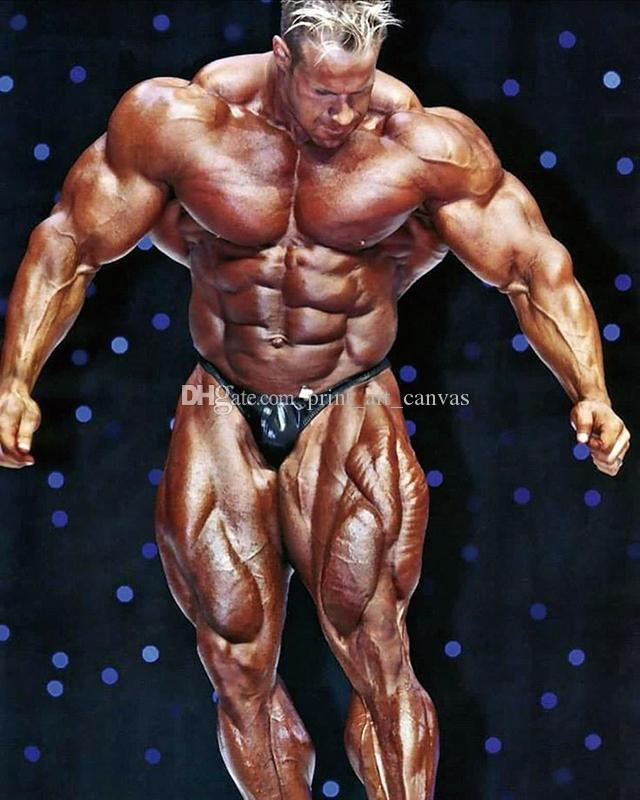

1. Lee Haney. Primer participante en ganar 8 titulos seguidos en los años 1984, 1985, 1986, 1987, 1988, 1989, 1990, 1991
2. Ronnie Coleman. Unica persona en igualar a Lee Haney, se le considera el mejor de la historia. Ganó en los años: 1998, 1999, 2000, 2001, 2002, 2003, 2004, 2005
3. Arnold Schwarzenegger. No solo conicod por su papel en el culturismo, ganó en 1970, 1971, 1972, 1973, 1974, 1975, 1980
4. Phil Heath.2011, 2012, 2013, 2014, 2015, 2016, 2017
5. Dorian Yates.1992, 1993, 1994, 1995, 1996, 1997
6. Jay Cutler. 2006, 2007, 2009, 2010
